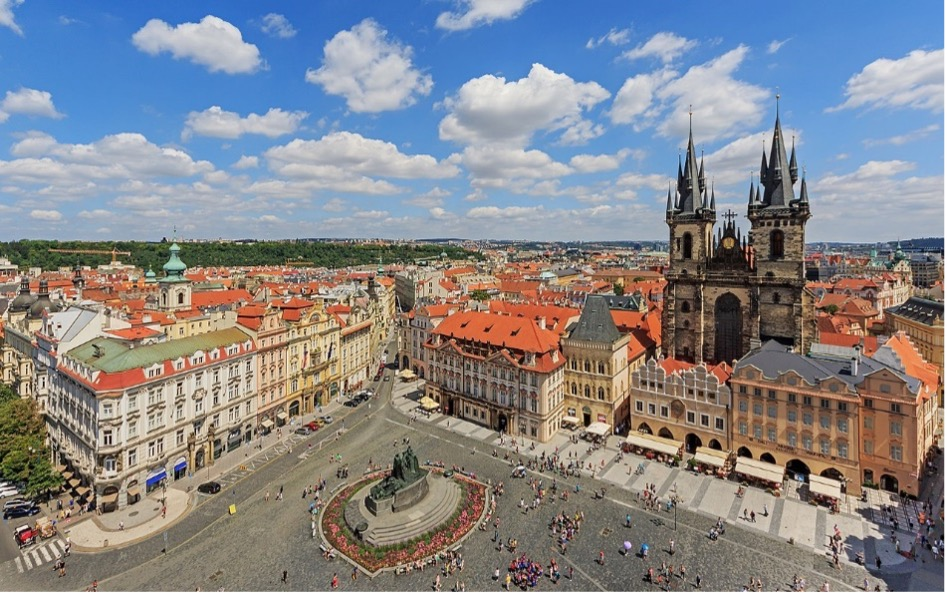

The welcome drink will take place during the PhD poster session in the conference venue.
The welcome drink will include light refreshments and drinks (beer/wine/soft drinks).
The welcome drink is included in all registration fees.
Meeting point: 17:45, Entrance to conference venue, ground floor foyer
2.5-hour guided walking tour of Prague (in English) with headphones for more comfortable listening.
The sightseeing tour of Prague drink is included in all registration fees.
Strahov Monastery, Hradčanské Square, South Gardens of the Prague Castle, Prague Castle, St. Vitus Cathedral, Nerudova Street, Charles Bridge, Old Town Square, etc.
 The most significant square of historical Prague. It originated in the 12th century. The square has several dominant features, the baroque St. Nicholas Church (K. I. Dienzenhofer, 1732–1737), the rococo Kinský Palace housing the National Gallery exhibition hall, the Stone Bell House – a gothic city palace from the 14th century – now the Municipal Gallery concert and exhibition halls, and the Memorial to Master Jan Hus sculptured by Ladislav Saloun (1915). The very place where the 27 Czech noblemen were executed on 21 June, 1621, is marked in the square pavement.
The oldest Prague bridge built in place of Judita’s Bridge that had been badly damaged by a flood in 1342. The Stone or Prague Bridge renamed Charles Bridge in 1870, was founded by Charles IV in 1357. According to the latest research the construction was started by Master Otto and finished by Peter Parler in 1402. Both ends of the bridge are fortified by towers (Lesser Town Bridge Tower, Old Town Bridge Tower). From 1683 to 1928 thirty sculptures and sculptural groups of the saints were gradually set on the bridge piers (M. Braun, F. M. Brokof, etc.). The bridge is 515 meters long and 10 meters wide.
A national cultural monument, the symbol of more than 4 millennia of development of the Czech state. Since its foundation in the last quarter of the 9th century it has been developing uninterruptedly throughout the past eleven centuries. It is a monumental complex of ecclesiastical, fortification, residential and office buildings representing all architectural styles and periods, surrounded by three castle courtyards, and covering 45 hectares. Originally it was the residence of the princes and kings of Bohemia. Since 1918 it has been the seat of the president.
Pilsner Urquell, the original beer experience
Pilsner Urquell Experience
28. října 377/13, Prague 1
The dinner will include buffet dinner and drinks (beer/wine/soft drinks). The conference dinner is included in all registration fees.